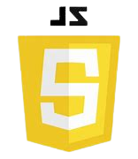
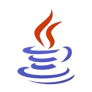
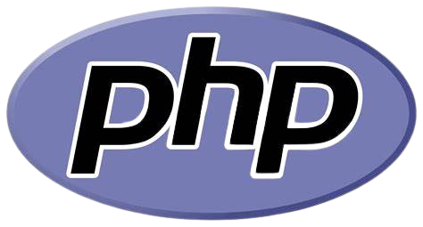
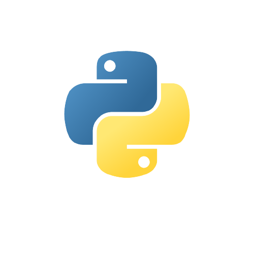
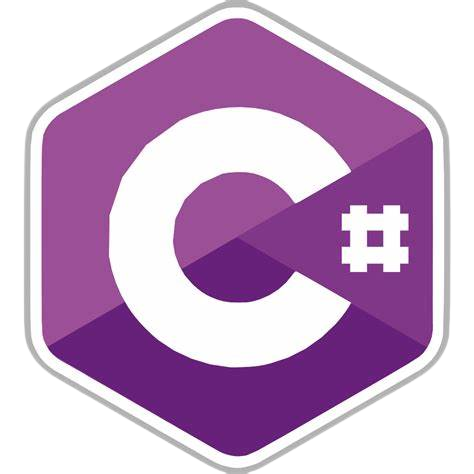
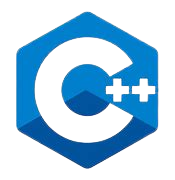

| Linguagens de Programação | Características | Tipo dos dados | Recomendada para | Vantagens | Paradigma |
|---|---|---|---|---|---|
|

Javascript
|
Os blocos de código são definidos com {} | Fracamente tipada e dinamicamente tipada | Desenvolvimento de web apps ou páginas de internet | Aumenta a interatividade de soluções, alto potencial para o desenho de interfaces ricas e aprimoradas, alta procura no mercado de trabalho | Orientada a objetos, imperativa e funcional |
|

Java
|
Os blocos de código são definidos com {} e precisa marcar o fim de uma instrução com ; | Estaticamente tipados | Desenvolvimento de apps que sejam dinâmicos ou aplicações Web (JSP) | Orientada a objetos, fácil de programar, comunidade forte e possui uma plataforma independente, que facilita a portabilidade da solução | Orientada a objetos |
|

PHP
|
O código PHP está escrito entre as tags php | Fracamente tipada e Dinamicamente tipada | Desenvolvimento de sites dinâmicos, desenvolvimento de aplicações para a web, criação de plugins e temas para WordPress, criação de scripts de linha de comando | Fácil aprendizagem, Código Aberto, Possui alto desempenho, Compatibilidade com Banco de dados, É multiplataforma | Imperativa, funcional, orientado a objetos, procedual e reflexivo |
|

Python
|
Os blocos de código são definidos com ":" e pela indentação | Fortemente tipada e dinamicamente tipada | Análise de Dados, Aprendizagem de Máquina e também para o design de apps. Também pode ser empregada na elaboração de scripts ou para automação de tarefas | Aumento de produtividade (necessário escrever pouco código para executar uma tarefa), fácil de aprender, fácil de escrever | Orientada a objetos, imperativa e funcional |
|

C#
|
Os blocos de código são definidos com {} e precisa marcar o fim de uma instrução | Estaticamente tipados | Desenvolvimento de apps para desktop, aplicações Web ou serviços web | Capacidade de gerenciar a memória e os recursos de um programa (uso flexível de memória), rápida e poderosa, orientada a objetos | Orientada a objetos, imperativa e funcional |
|

C++
|
Os blocos de código são definidos com {} e precisa marcar o fim de uma instrução com ; | Fortemente tipados (desconsiderando o tipo union) | Sistemas embarcados (hardware) ou sistemas de alto desempenho (kernel de Sistema Operacional, por exemplo) | Rápida, multi-paradigma, alta portabilidade (podemos escrever programas para diferentes plataformas), possui um bom conjunto de bibliotecas e não é tão baixo nível | Orientada a objetos, imperativa e funcional |